User guide
Size a computer system before you build it
Hardware System Design Explorer takes what a system has to do (how much data per second, how fast each piece must come back) and shows which part of the hardware runs out first, what each part has to be, and what it costs in power, silicon and money. This guide explains every part of it, assuming no background in hardware.
01What it is, and who it’s for
A system that processes data (an AI server answering questions, a radar receiver, a video encoder, a database accelerator) is a chain of parts: a host computer and its memory, a link such as PCIe, one or more accelerators with fast on-chip memory and their own DRAM, and, at scale, networks joining many of them across racks. Data has to pass through every link in that chain. The chain is only as fast as its slowest link.
The explorer models that chain. You state the requirement, and it works out, for every part:
- how loaded it is, and which part is the bottleneck;
- how long one piece of data takes to get through, including waiting in queues;
- what each part must be to meet the requirement: which memory, how many channels, which link;
- power, chip area and cost, from the energy and silicon each part needs.
It is for engineers sizing a design, students learning how systems are balanced, and anyone who wants to check a claim like “this needs HBM” or “one PCIe link is enough”. It runs entirely in your browser; there is nothing to install and nothing is sent anywhere unless you use the optional assistant with your own key.
02A tour of the screen
The page shows little at once and keeps detail a click away. From top to bottom:
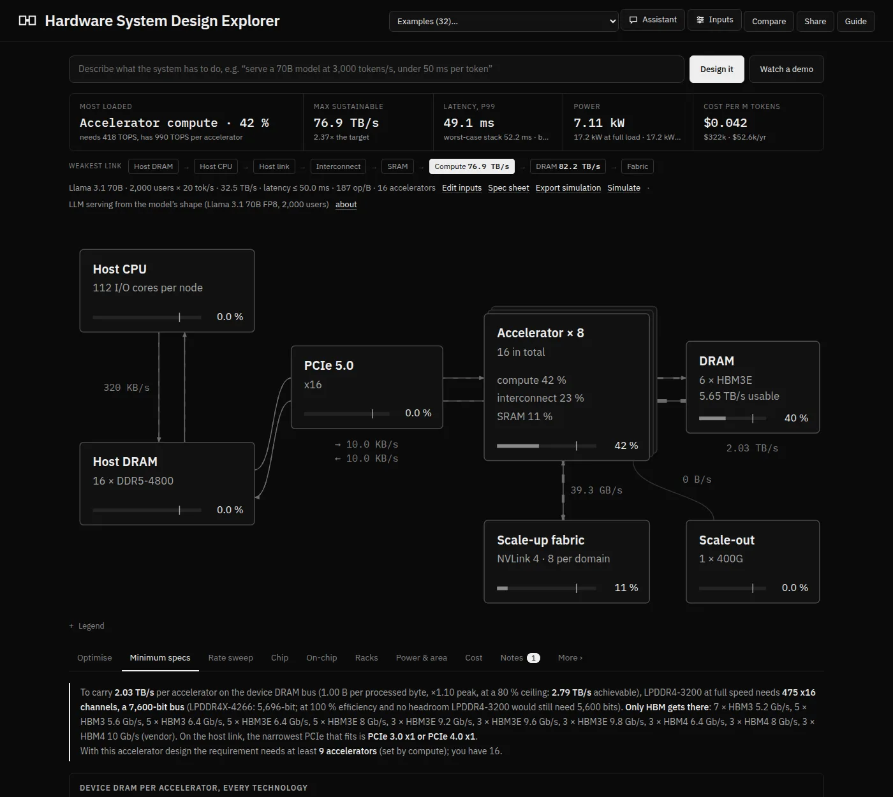
- Header. The example picker loads one of 32 ready-made systems. Assistant opens the design assistant, Inputs opens every setting, Compare pins the current design to compare against, Share copies a link, and Guide opens this page.
- Describe it. Type what the system must do in plain words and press Design it; or press Watch a demo to see a recorded assistant session drive the page.
- Five headline figures: the most loaded part, the maximum sustainable rate, latency, power and cost. Click any one to see how it is worked out (section 5).
- The weakest-link strip and the requirement line: every part on the data path with the rate it alone could carry, the requirement in one line, and links to Edit inputs, Spec sheet, Export simulation and Simulate.
- The block diagram. Moving dashes show traffic. Each block shows its load; hover for figures, click to configure it. Legend explains the markings.
- Analysis tabs: nine main views and five more under More (section 7).
How status is shown
The app is black and white on purpose. Status is shown by weight, dashes and inversion, so it never depends on seeing colour:
03The one idea: load and the bottleneck
Everything starts from one number, the processing rate: bytes of input handled per second. Each part has to move or compute some amount for every byte processed. So for every part:
- demand = rate × peak-to-average ratio × how much that part handles per byte;
- capacity = its peak × an efficiency (protocol overheads, refresh, access pattern);
- load (utilisation) = demand ÷ capacity.
The part with the highest load is the bottleneck. The most the system can sustain is the target rate ÷ that load: at 125 % it can only do 80 % of the target. The utilisation ceiling (80 % by default) is the headroom you want to keep, because queues grow fast as a part approaches 100 %.
Try it: push the rate and watch the bottleneck move
A made-up three-part system, for illustration (not the app’s numbers). Each processed byte crosses the link once, is read and written in DRAM three times, and needs 40 operations.
Dashed line: the 80 % ceiling. Solid line: 100 %. The bold bar is the bottleneck.
Two things follow, and they are the heart of sizing:
- Speeding up anything other than the bottleneck changes nothing. The app’s weakest-link strip lists every part with the rate it alone could carry, so you see the next limit too.
- Peaks matter, not averages. If traffic arrives in bursts 1.5 × the average, every part must be sized for 1.5 ×. Where many independent streams share a part, such as a host serving eight accelerators, their bursts partly cancel, and the model sizes that part for a smaller, smoothed peak.
04Getting started in five minutes
- Pick an example. Open the picker in the header. Examples are grouped (AI and LLMs, imaging and video, signal processing, data and storage, science) and each has an about note saying what it shows. Ones marked ✗ are deliberately broken, to show a classic bottleneck.
- Read the verdict. The first headline figure names the most loaded part. If it says Bottleneck and is inverted, the design can’t meet the target.
- Click the bottleneck block in the diagram. Its drawer opens on the right with its settings: change the memory type, add channels, widen the link. The page recalculates as you drag.
- Or let it search. The Optimise tab tries memory types and counts, links, on-chip networks and fabrics, and returns the best designs for power, area, cost or a balance, one click from being applied.
- Keep the result. Share copies a short link that reopens exactly this design; Spec sheet prints it on one page.
05Reading the five headline figures
| Figure | What it means | When to worry |
|---|---|---|
| Most loaded / Bottleneck | The part with the highest load, and that load. The label changes from Most loaded to Limiting (above ceiling) to Bottleneck as it rises. | Above the ceiling (dashed) you have little headroom; above 100 % (inverted) the target can’t be met. |
| Max sustainable | The highest rate the system can carry, and how many times the target that is. | Below 1 × the target. |
| Latency | How long one block takes end to end, at the percentile you chose (p99 by default), or the worst-case stack for a hard deadline. Compared with your budget. | Over budget, or queue unstable when a part is over 100 % on average. |
| Power | Average power at the target rate, with full-load power underneath, including fans and power conversion. Per rack when there are racks. | Full-load rack power over the rack’s cooling limit. |
| Cost | Cost per million tokens (LLM workloads) or per petabyte processed: a year’s hardware write-off, facility and electricity, divided by a year’s work. Capital cost underneath. | Compare designs: it is most useful as a relative figure. |
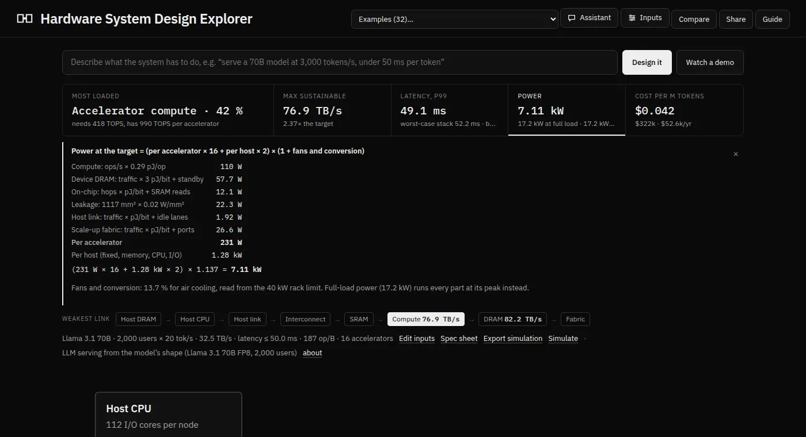
06Setting the inputs
Inputs (header) opens a drawer of collapsible sections. On wide screens it pushes the page aside so you can watch the diagram while you drag. Every control has a hint; log-scale sliders cover many orders of magnitude.
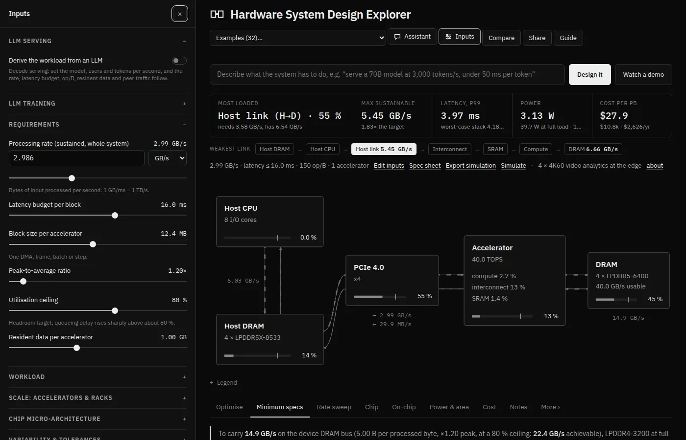
Requirements
Processing rate, latency budget per block, block size (one DMA, frame, batch or step), peak-to-average ratio, and the utilisation ceiling.
Workload
Where data comes from (host, network, NVMe), bytes over the link in and out per byte, extra DRAM reads and writes, arithmetic per byte, access pattern, ECC, resident data.
Scale
Accelerators per node, nodes per rack, racks, the scale-up domain, peer traffic inside it and across the network, and the rack power limit.
Variability
Soft or hard deadline, percentile, jitter, arrival burstiness, whether peaks line up, and catalogue tolerance.
LLM serving / training
Derive the whole workload from a model’s shape instead (section 9).
Chip and cost
The compute array behind the accelerator (section 10), and electricity price, write-off period and purchase or build cost.
The hardware itself
Hardware is set per component: click a block in the diagram. Its drawer shows the choices (51 DRAM speed grades in 16 types from DDR4 to HBM4, PCIe 3.0 to 7.0 or UCIe, ten on-chip networks and AMBA fabrics, scale-up fabrics, NICs), the figures behind its load, and how its rate breaks down from raw to usable, overhead by overhead.
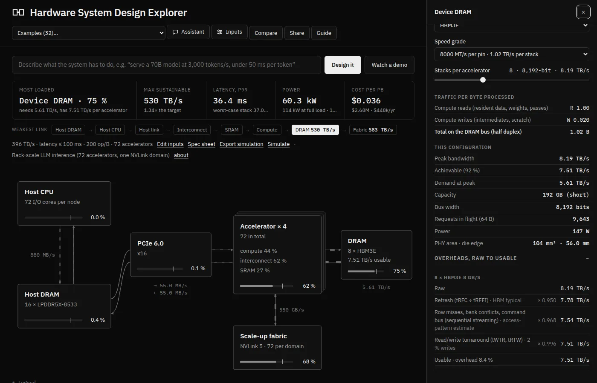
What “bytes per byte processed” means, with an example
The workload is described per byte of input, so it scales with the rate. A video encoder that reads each input frame once over the link (1 B in), writes back a tenth as much compressed video (0.1 B out), and touches each frame five times in DRAM for motion search (5 B of DRAM reads) has in 1, out 0.1, extra reads 5. Multiply by the rate to get every part’s traffic. The examples are a good source of realistic values.
07The analysis tabs
Optimise
Searches memory, links, on-chip networks, fabrics and NICs (and, if allowed, the accelerator count) for designs under the ceiling and within budget. Goal: power, area, cost or balanced. Practical limits can be switched off.
Minimum specs
Every DRAM technology sized for the requirement (width, capacity, power, PHY area, pins) with a practical / stretch / impractical verdict, plus every link, host memory, fabric, NIC, compute and SSD option. One click applies one.
Rate sweep
The same questions at 25 rates from 1/100 to 100 × the target: where the memory type has to change, and the optimiser’s design at every rate.
Chip
The compute array, how a matrix multiply maps onto it, voltage and heat, the memory controller, the floorplan, the package and chiplets.
On-chip
The on-chip network or AMBA fabric drawn, and all ten compared at typical settings.
Racks
Rack elevations and rack power against the cooling limit (multi-accelerator designs).
Power & area
Power by component; die area, switching to pad-limited when the memory and link PHYs need more edge than the logic gives; the reticle check.
Cost
Build cost of one accelerator (dies, yield, DRAM, package), the system’s capital, yearly cost and unit cost.
Notes
Checks generated for this design: DRAM turnaround, capacity, PCIe efficiency, outstanding reads, queueing, buffering, beachfront, ECC and more. A number on the tab counts the failures.
Latency More
One block through every stage: fixed time, transfer and queueing; the latency distribution; latency against block size.
Checks More
The model against published figures, and against a simulation (section 13).
Headroom More
Every part’s load as the rate scales: the first line past 100 % is the bottleneck, the next shows what fixing it buys.
Roofline More
Arithmetic intensity against memory bandwidth and the ridge point, with a second roof set by the host link.
Model More
Every formula and every catalogue value, with sources.
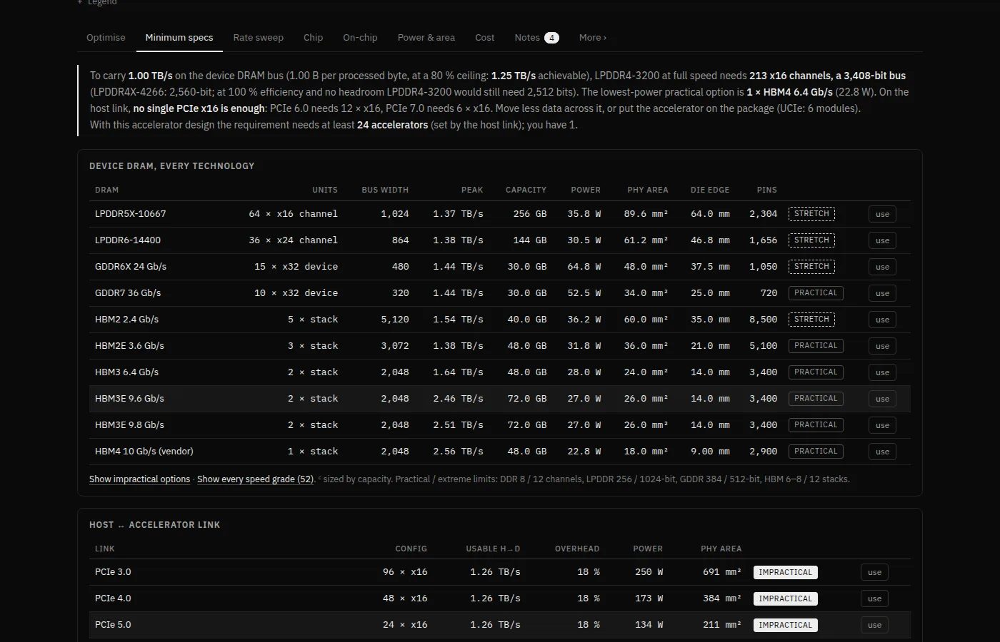
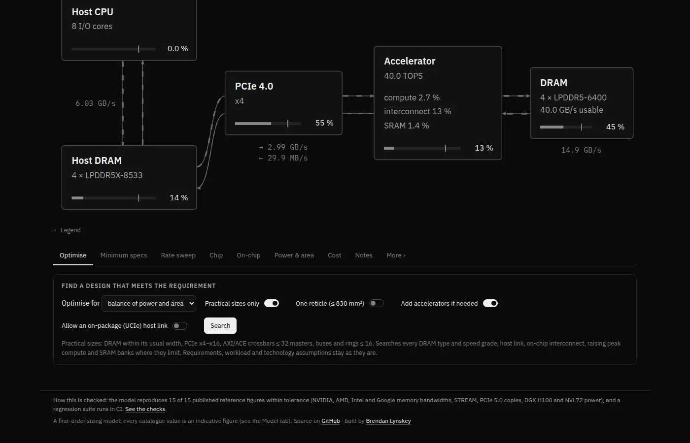
08Latency, queues and percentiles
Throughput says whether the system keeps up on average; latency says how long each block waits. One block passes a series of stages: host submit, the link to the accelerator, device memory, the on-chip network, compute, any collective exchange with other accelerators, the link back and completion. Each stage costs three things:
Why queues grow so fast
A part that is busy 50 % of the time makes an arriving block wait a little; at 90 % it waits about nine times as long; at 100 % the queue never empties. How long depends on two more things: how irregular the arrivals are (the arrival burstiness, a coefficient of variation: 0 for clockwork, 1 for random) and how much the part’s own service time varies (its jitter). The model uses Kingman’s formula: wait ≈ (burstiness² + jitter²) ÷ 2 × load ÷ (1 − load) × service time.
Try it: a live queue
Blocks (squares) arrive at one server. Raise the load or make arrivals random and watch the queue build. This runs a small simulation in your browser.
Waiting now: 0 blocks · average wait so far: – service times · Kingman predicts –
Percentiles, and why the worst case isn’t the sum of worst cases
Latency varies from block to block. A soft deadline is judged at a percentile: p99 means 99 blocks in 100 are at least this fast. The model draws tens of thousands of random blocks through the stages (a Monte Carlo) and reads the percentile off the result. A hard deadline (a trading feed, a 5G slot, a detector trigger) instead uses the tolerance stack: every stage at its own bad case at once, which is pessimistic but safe.
Do peaks line up? Under Variability, choose whether bursts and delays at different stages are independent, partly correlated (the default) or fully correlated (the worst case). Shared resources such as a host are then sized for the smoothed peak.
How the model treats queues in detail (updated after the simulation check)
Each stage’s mean wait is Kingman’s G/G/1 approximation. The first queue sees your arrival burstiness. Each later queue sees the departures of the one before: a busy, steady stage spaces blocks out, so the next queue forms less. The model passes this on with Whitt’s linking equation, cd² = ρ²cs² + (1 − ρ²)ca². In the Monte Carlo, a queue wait is zero with probability 1 − load and otherwise exponential, with the same mean; fixed and transfer times are lognormal around their means. Both refinements came from comparing the model with a discrete-event simulation (section 13).
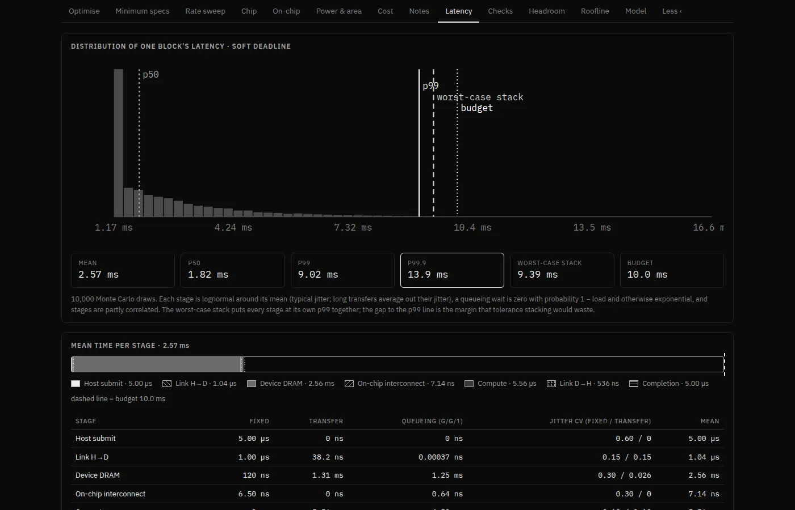
09LLM serving and training
For large language models you don’t need to work out bytes per byte yourself. Turn on LLM serving or LLM training at the top of Inputs and describe the model and the traffic; the workload is derived and locked.
Serving
Choose the model (Llama 3.1 8B, 70B or 405B, Mixtral 8×7B, DeepSeek-V3, or a custom shape), weight and KV-cache precision, users decoding at once, tokens per second per user, users per copy (the batch) and the average context. Each decode step reads every weight once per copy, plus every user’s KV cache, so:
- rate = users × tokens/s × (weights ÷ batch + KV cache per user);
- latency budget = one decode step = 1 ÷ tokens per second.
Include prefill adds the prompts, which add arithmetic and can make the system compute-bound. Split prefill and decode across two pools gives prompts their own accelerators, as production serving increasingly does; each prompt’s KV cache then crosses the network, and the headline figures cover both pools. The example Prefill and decode on separate pools shows a design that misses its 50 ms step budget in one pool and meets it split.
Training
Choose the model, precision (BF16 or FP8), training tokens per second, sequence length, global batch, micro-batch, and tensor and pipeline parallelism; data parallelism is whatever the accelerator count leaves. The model works out arithmetic (6 × active parameters per token plus attention, more with recomputation and the pipeline bubble), DRAM traffic, memory per accelerator (with optional ZeRO-1 sharding) and the traffic of every all-reduce, and gives the days and cost of a whole run.
10Inside the chip
The Chip tab looks beneath an accelerator’s headline numbers. Turn on Derive the accelerator from its compute array (Inputs › Chip micro-architecture) and the peak compute, area and energy follow from cores of rows × columns of processing elements, a clock and a precision.
- Mapping a matrix multiply onto the array gives the achievable share of peak: how well the tiles divide the matrix, fill and drain time, and how full the last round leaves the cores. A chart shows why small decode batches can’t fill a large systolic array.
- Voltage and heat: lower voltage slows the clock but cuts energy with V²; leakage rises with temperature, and the junction temperature is solved with the leakage it causes. Over 95 °C is flagged.
- Floorplan, package and chiplets: the die drawn to scale, the package against the reticle, and a sweep of 1 to 8 chiplets with die-to-die (UCIe) power, yield and cost.
- Memory controller (optional): DRAM efficiency from banks, timings, queue depth and refresh instead of a table.
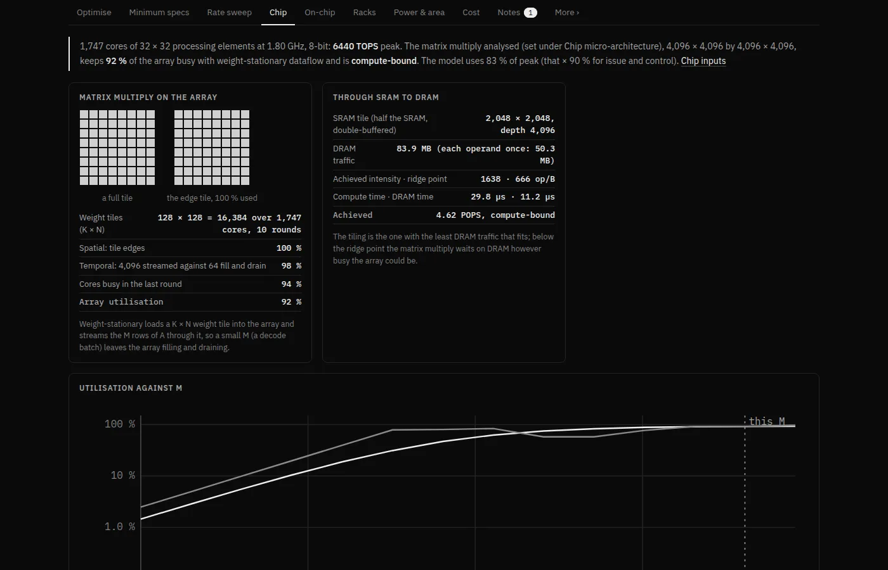
11Compare, share and print
Compare
Pins the current design as A. Change anything and a line shows how B differs in power, area, maximum rate and latency; bold means better. details opens the full table, swap and re-pin manage A and B.
Share
Copies a short link holding the example plus only what you changed, for example #d=nvl72,dev.units:6. A pinned A travels in the link too.
Spec sheet
One printable A4 page: requirement and result, every part with its quantity and power, the load on every limit, open issues, and the share link.
Export simulation
Downloads a zip with design.json and sim.py to simulate the design on your own machine (section 13).
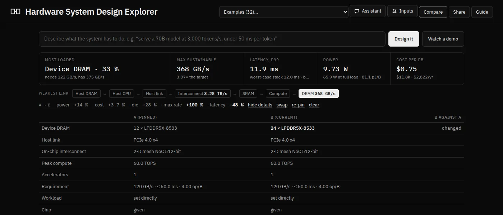
12The design assistant
Assistant opens a chat that turns plain language into the model’s inputs, asks up to three short questions when something important is missing, then picks hardware or runs the optimiser until every part is under the ceiling, redrawing the page as it goes.
- Your key, your browser. It uses your own API key from OpenAI, Google Gemini, OpenRouter or Anthropic. The key goes only to that provider and stays in your browser, for the session or longer if you tick remember. The site never sees it.
- No key? Watch a demo replays a recorded session whose tool calls run for real, and the Design it box falls back to a simple built-in reader.
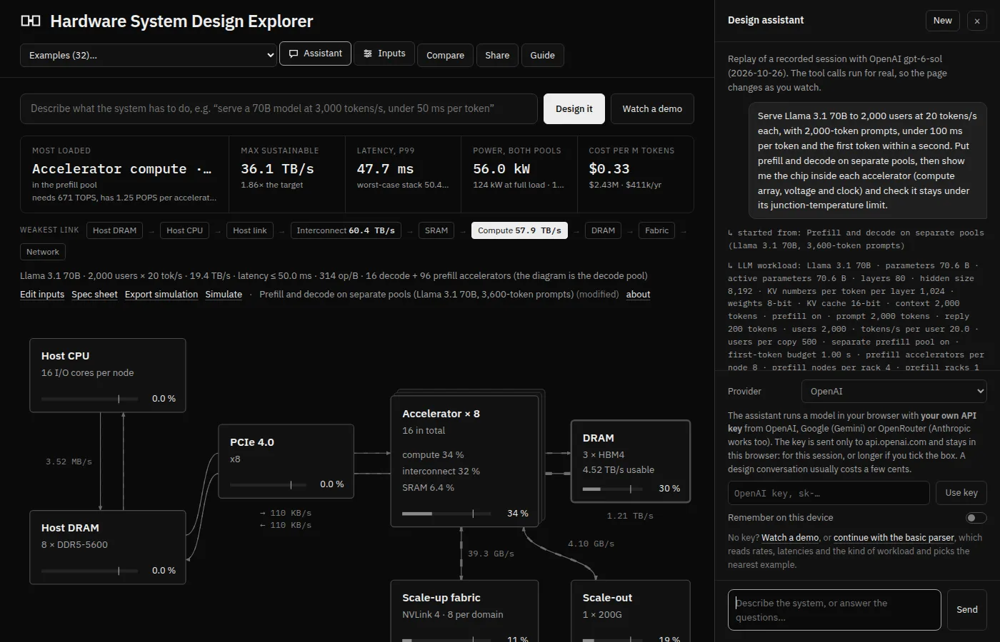
13Checking it by simulation
The quick formulas behind latency and throughput are approximations. To check them, any design can be run as a discrete-event simulation: thousands of individual blocks pass through the same stages as real queues, with random arrivals and service times, and the results are compared with the model’s figures.
Three ways to run it
- In your browser. Click Simulate (next to Spec sheet), then Simulate this design. The first time, it fetches Python (Pyodide, about 10 MB) and the SimPy library; after that it is quick. A progress bar counts the runs; the page stays usable. Nothing about your design leaves the page.
- On your computer. Click Export simulation, unzip, and run
pip install simpy==4.1.1 && python sim.py design.json --runs 200 --seed 1 --json out.json. More runs give tighter confidence intervals. - For every example, automatically. The project re-simulates all 32 examples on every change and publishes the table on the Checks tab.
Reading a row
The simulation’s answer comes with a 95 % confidence interval: the range the true value is very likely in, given the randomness. A check agrees when the model’s figure falls inside that interval, widened by a small tolerance fixed in advance (2 % for ceilings and loads, 5 % for the mean, 10 % for queue waits and percentiles). Otherwise it is a miss, shown and explained, never hidden.
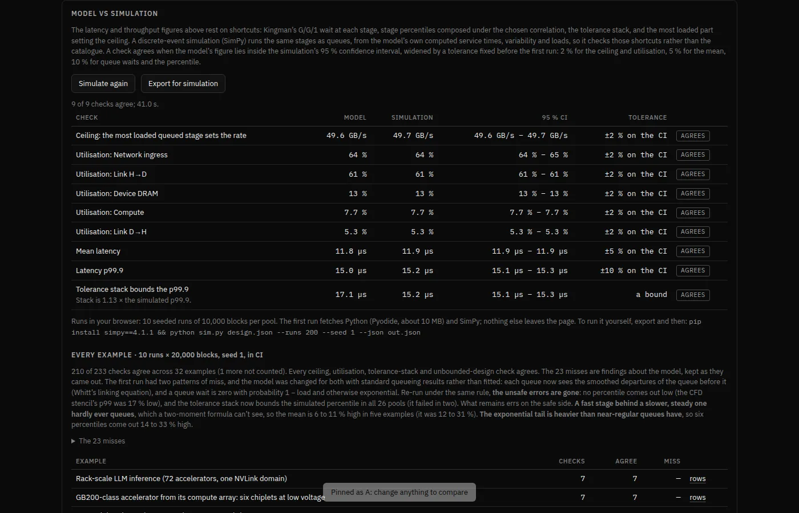
What the simulation does not check: the catalogue (memory bandwidths, link overheads, energies). It uses the model’s own figures for those; the published-figure rows on the Checks tab cover them.
14Three worked examples
A. “Can one accelerator take 1 TB/s?”
- Pick 1 GB per ms stream (the 1 TB/s question): 1 TB/s processed from device DRAM, with every byte coming in and going out over the host link.
- The headline is inverted: the host link is the bottleneck, many times over capacity. Device memory (two HBM3E stacks) is fine. The weakest-link strip shows the host’s own memory can’t feed it either.
- Open Minimum specs and look at the link table: no PCIe generation or width comes close. The lesson is architectural: move less data over the link (keep it resident on the device, or filter it on the way in), not buy a faster link.
B. Serve a 70B model to thousands of users
- Pick LLM serving from the model’s shape. Open Inputs › LLM serving.
- Double Average context per user. The rate rises, because each user’s KV cache grows, and the latency per step follows.
- Raise Users per copy: weights are shared more, but the cache isn’t. Then turn on Include prefill and see compute become the limit, and Split prefill and decode to give prompts their own pool.
- Check the cost per million tokens as you go, and pin the starting point with Compare to see what each change bought.
C. Diagnose a broken design
- Pick GPU database join over PCIe ✗. The latency figure reads queue unstable: a part is over 100 % on average.
- The inverted block is the host link: every query ships its columns from host memory, and a join does only about 2 operations per byte, too little to make the trip worthwhile. Open Notes for the explanation and Headroom to see how far the rate would have to fall.
- Try the link’s drawer (a newer PCIe generation, more links) and see how far it gets; then the real fix the example’s note suggests: keep the data resident on the device, or filter it on the way in.
15How far to trust it
Every figure comes from code that is tested, and the model is checked three ways:
- Against published figures: memory bandwidths of NVIDIA, AMD, Intel, Google and Apple parts, a STREAM result, measured PCIe copies, DGX and NVL72 power, and MLPerf LLM throughput. Known misses (such as MLPerf on B200 with FP4, +79 %) stay on the page, labelled.
- Against a simulation of its own queueing shortcuts (section 13).
- By a regression suite on every change: 32 examples against stored results, sums done by hand, links that round-trip, and an accessibility audit.
It is first-order. Catalogue numbers are indicative, compute is one achievable fraction of peak, collectives are bandwidth plus a latency term, and cooling plant outside the rack isn’t counted. Use it to find the limit and the order of magnitude, then confirm a final design with vendor data and measurement. The Model tab lists every formula and value.
16Keyboard, screen readers and phones
- Keyboard: everything is reachable with Tab, Shift+Tab, Enter and Space; sliders move with the arrow keys and Page Up/Page Down. Diagram blocks and headline figures are focusable. Esc closes a drawer or the spec sheet, and focus returns to where you were.
- Screen readers: status is in text as well as in shape (“Bottleneck”, “above the ceiling”). Tables that scroll sideways are labelled regions. Simulation progress is announced politely.
- Vision: text meets WCAG AA contrast, and nothing depends on colour.
- Motion: the diagram’s moving dashes and this guide’s animations respect your system’s reduce-motion setting; here, Pause animations also stops them.
- Phones: every view fits a 390-pixel screen; wide tables scroll inside their own frame.
An automated audit (axe-core) checks the app’s pages, tabs, drawers, spec sheet and simulation states, and this guide, on every change, with no violations allowed. If something doesn’t work for you, please open an issue.
17Questions
Is my design or data sent anywhere?
No. The app is a single static page and calculates everything in your browser. Only two optional features use the network: the assistant (to the AI provider you choose, with your key) and the in-browser simulation (to download Python and SimPy, not to send your design).
Why does the maximum rate show less than the target?
A part is over 100 % at the peak. The system can then sustain the target ÷ that load. Fix the bottleneck, lower the peak-to-average ratio if your traffic allows, or add accelerators.
What is the difference between the utilisation ceiling and 100 %?
100 % is the physical limit. The ceiling (80 % by default) is headroom you choose to keep, because queueing delay rises steeply near 100 % and real traffic has surprises. Parts above the ceiling are dashed; above 100 %, solid and bright.
Why is my latency “unbounded”?
Some part is loaded to 100 % or more on average, so its queue grows without limit. The weakest-link strip shows which.
Should I use a soft or a hard deadline?
Soft for services judged statistically (web requests, LLM tokens): p99 or p99.9. Hard where a single late result is a failure (trading, control loops, radio slots): the tolerance stack.
Can I add my own component?
Most parts take custom values through their drawers (custom model shapes, compute, energies). New catalogue entries need a change to the page’s source, which is on GitHub.
How do I cite or keep a design?
Use Share for a link, or Spec sheet › Print or save as PDF. The sheet carries the link, so a printed copy leads back to the live model.
18Glossary
- Accelerator
- A chip that does the heavy arithmetic: a GPU, TPU, FPGA or custom ASIC.
- Bottleneck
- The part with the highest load; it caps the whole system.
- Block
- The unit of work that moves through the system together: one DMA transfer, frame, batch or step.
- Coefficient of variation (CV)
- Standard deviation ÷ mean. 0 means perfectly regular; 1 is as irregular as random (Poisson) arrivals.
- Confidence interval
- A range that, given the simulation’s randomness, very likely (here 95 %) contains the true value.
- DRAM, HBM, GDDR, LPDDR, DDR
- Kinds of memory chips. HBM stacks sit beside the processor on the same package for the highest bandwidth; DDR and LPDDR are cheaper and slower per pin.
- Host, host link
- The ordinary CPU computer that feeds the accelerators, and the connection to them (PCIe, or UCIe on the same package).
- Kingman’s formula
- An approximation for the average wait in a single queue from its load and the variability of arrivals and service.
- KV cache
- What a language model keeps for each user’s context so it doesn’t recompute it at every token.
- Load (utilisation)
- Demand ÷ usable capacity, at the peak.
- NoC
- Network-on-chip: the wiring that moves data between parts of one chip.
- Peak-to-average ratio
- How much higher the busiest moments are than the average rate.
- Percentile (p99, p99.9)
- The latency that 99 % (or 99.9 %) of blocks beat.
- Prefill and decode
- An LLM first reads the prompt (prefill, arithmetic-heavy), then generates one token at a time (decode, memory-heavy).
- PPA
- Power, performance and area: the three things chip design trades against each other.
- Reticle
- The largest area a lithography machine can expose at once, about 26 × 33 mm; bigger designs need several dies.
- Scale-up and scale-out
- Fast links between accelerators in one domain (NVLink, UALink), and the slower network between domains.
- Tolerance stack
- Adding every stage’s bad case together: a safe but pessimistic bound.
- UCIe
- A standard for links between chiplets in one package.